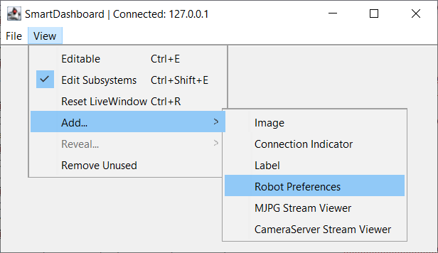
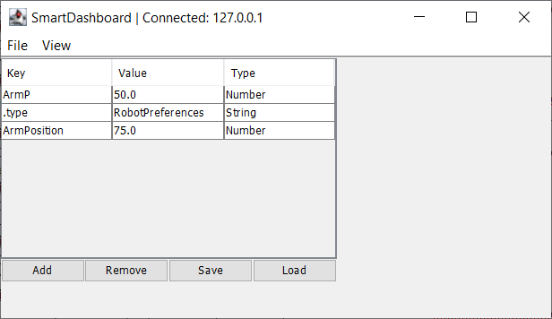
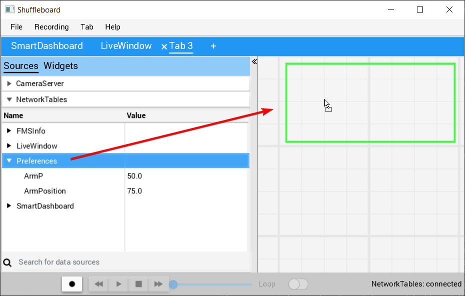
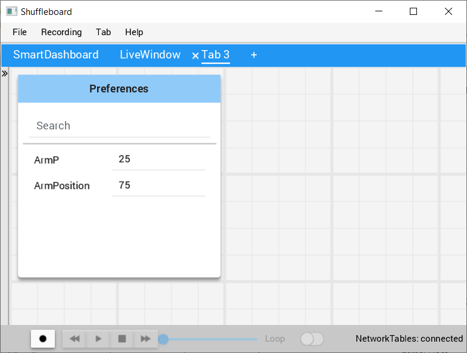

Setting Robot Preferences
The Robot Preferences (Java, C++) class is used to store values in the flash memory on the roboRIO. The values might be for remembering preferences on the robot such as calibration settings for potentiometers, PID values, setpoints, etc. that you would like to change without having to rebuild the program. The values can be viewed on SmartDashboard or Shuffleboard and read and written by the robot program.
This example shows how to utilize Preferences to change the setpoint of a PID controller and the P constant. The code examples are adapted from the Arm Simulation example (Java, C++). You can run the Arm Simulation example in the Robot Simulator to see how to use the preference class and interact with it using the dashboards without needing a robot.
Initializing Preferences
public static final String kArmPositionKey = "ArmPosition";
public static final String kArmPKey = "ArmP";
// The P gain for the PID controller that drives this arm.
public static final double kDefaultArmKp = 50.0;
public static final double kDefaultArmSetpointDegrees = 75.0;
// The P gain for the PID controller that drives this arm.
private double m_armKp = Constants.kDefaultArmKp;
private double m_armSetpointDegrees = Constants.kDefaultArmSetpointDegrees;
/** Subsystem constructor. */
public Arm() {
// Set the Arm position setpoint and P constant to Preferences if the keys don't already exist
Preferences.initDouble(Constants.kArmPositionKey, m_armSetpointDegrees);
Preferences.initDouble(Constants.kArmPKey, m_armKp);
}
static constexpr std::string_view kArmPositionKey = "ArmPosition";
static constexpr std::string_view kArmPKey = "ArmP";
static constexpr double kDefaultArmKp = 50.0;
static constexpr units::degree_t kDefaultArmSetpoint = 75.0_deg;
Arm::Arm() {
// Set the Arm position setpoint and P constant to Preferences if the keys
// don't already exist
frc::Preferences::InitDouble(kArmPositionKey, m_armSetpoint.value());
frc::Preferences::InitDouble(kArmPKey, m_armKp);
}
Preferences are stored using a name, the key. It’s helpful to store the key in a constant, like kArmPositionKey and kArmPKey in the code above to avoid typing it multiple times and avoid typos. We also declare variables, kArmKp and armPositionDeg to hold the data retrieved from preferences.
In robotInit, each key is checked to see if it already exists in the Preferences database. The containsKey method takes one parameter, the key to check if data for that key already exists in the preferences database. If it doesn’t exist, a default value is written. The setDouble method takes two parameters, the key to write and the data to write. There are similar methods for other data types like booleans, ints, and strings.
If using the Command Framework, this type of code could be placed in the constructor of a Subsystem or Command.
Reading Preferences
public void loadPreferences() {
// Read Preferences for Arm setpoint and kP on entering Teleop
m_armSetpointDegrees = Preferences.getDouble(Constants.kArmPositionKey, m_armSetpointDegrees);
if (m_armKp != Preferences.getDouble(Constants.kArmPKey, m_armKp)) {
m_armKp = Preferences.getDouble(Constants.kArmPKey, m_armKp);
m_controller.setP(m_armKp);
}
}
void Arm::LoadPreferences() {
// Read Preferences for Arm setpoint and kP on entering Teleop
m_armSetpoint = units::degree_t{
frc::Preferences::GetDouble(kArmPositionKey, m_armSetpoint.value())};
if (m_armKp != frc::Preferences::GetDouble(kArmPKey, m_armKp)) {
m_armKp = frc::Preferences::GetDouble(kArmPKey, m_armKp);
m_controller.SetP(m_armKp);
}
}
Reading a preference is easy. The getDouble method takes two parameters, the key to read, and a default value to use in case the preference doesn’t exist. There are similar methods for other data types like booleans, ints, and strings.
Depending on the data that is stored in preferences, you can use it when you read it, such as the proportional constant above. Or you can store it in a variable and use it later, such as the setpoint, which is used in telopPeriodic below.
@Override
public void teleopPeriodic() {
if (m_joystick.getTrigger()) {
// Here, we run PID control like normal.
m_arm.reachSetpoint();
} else {
// Otherwise, we disable the motor.
m_arm.stop();
}
}
/** Run the control loop to reach and maintain the setpoint from the preferences. */
public void reachSetpoint() {
var pidOutput =
m_controller.calculate(
m_encoder.getDistance(), Units.degreesToRadians(m_armSetpointDegrees));
m_motor.setVoltage(pidOutput);
}
void Robot::TeleopPeriodic() {
if (m_joystick.GetTrigger()) {
// Here, we run PID control like normal.
m_arm.ReachSetpoint();
} else {
// Otherwise, we disable the motor.
m_arm.Stop();
}
}
void Arm::ReachSetpoint() {
// Here, we run PID control like normal, with a setpoint read from
// preferences in degrees.
double pidOutput = m_controller.Calculate(
m_encoder.GetDistance(), (units::radian_t{m_armSetpoint}.value()));
m_motor.SetVoltage(units::volt_t{pidOutput});
}
Using Preferences in SmartDashboard
Displaying Preferences in SmartDashboard
In the SmartDashboard, the Preferences display can be added to the display by selecting View then Add… then Robot Preferences. This reveals the contents of the preferences file stored in the roboRIO flash memory.
Editing Preferences in SmartDashboard
The values are shown here with the default values from the code. If the values need to be adjusted they can be edited here and saved.
Using Preferences in Shuffleboard
Displaying Preferences in Shuffleboard
In Shuffleboard, the Preferences display can be added to the display by dragging the preferences field from the sources window. This reveals the contents of the preferences file stored in the roboRIO flash memory.
Editing Preferences in Shuffleboard
The values are shown here with the default values from the code. If the values need to be adjusted they can be edited here.